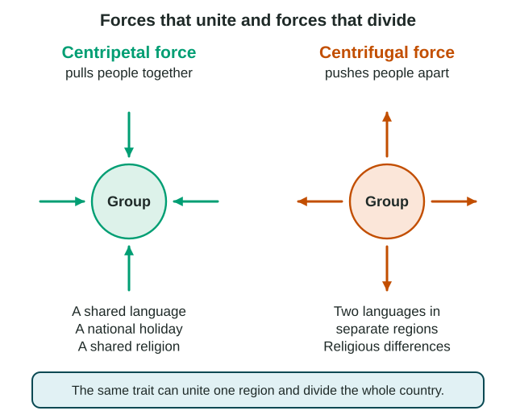

Culture is not sprinkled evenly across a map. People who share a language, a religion or an ethnicity tend to live near each other, so culture forms regional patterns. Those patterns give places their character, and they can hold a country together or pull it apart.
Regional patterns of culture
Three traits make the clearest patterns on maps:
- Language. In Belgium, at the national scale, most people in the northern region of Flanders speak Dutch, and most people in the southern region of Wallonia speak French, with the capital, Brussels, mostly French-speaking but officially bilingual.
- Religion. In Nigeria, most people in the north are Muslim and most people in the south are Christian, with many mixed areas between.
- Ethnicity. In many countries, ethnic groups live mostly in one region, as Indigenous Sámi communities do in the far north of Norway, Sweden and Finland and on Russia's Kola Peninsula.
To describe a pattern well, name where, what and how much: "French is the main language in Wallonia, the southern half of Belgium." The word "clustered" with no place named earns no credit on the exam.
Sense of place and placemaking
A sense of place is the meaning a place holds for the people who know it: the feeling of home, pride or belonging. Placemaking is what people do to shape a place so it expresses who they are.
Pilsen, on the Lower West Side of Chicago, Illinois, shows placemaking at the local scale. A large Mexican American community has lived there since the mid-1900s. Neighborhood artists have painted dozens of murals of Aztec symbols, Mexican history and local families, the National Museum of Mexican Art (then called the Mexican Fine Arts Center Museum) opened there in 1987, and yearly street festivals bring music and food from Mexico. The result is a strong sense of place: residents say the murals tell visitors "this is our neighborhood."
Forces that unite and forces that divide

A centripetal force is anything that pulls people together. A centrifugal force is anything that pushes them apart. The words come from physics: centripetal means "toward the center," centrifugal "away from the center."
| Centripetal force | Centrifugal force | |
|---|---|---|
| What it does | Unites people; builds a shared identity | Divides people; weakens a shared identity |
| Language | Tanzania promoted Swahili in schools and government after independence, giving more than 100 ethnic groups a shared language | Belgium's Dutch north and French south have made the country hard to govern as one |
| Religion | A shared religion and its holidays can bring people together | In Belfast, Northern Ireland, "peace walls" still separate some mostly Catholic and mostly Protestant neighborhoods |
| Ethnicity and identity | A national soccer team or holiday that everyone celebrates | A group concentrated in one region that feels apart from the rest |
Scale changes the answer
The same trait can be centripetal at one scale and centrifugal at another. In Quebec, Canada, most people speak French. Inside the province, the shared language unites people, a centripetal force at the local (subnational) scale, since a province is a subnational unit. At the national scale of Canada, that same identity fed a 1995 vote on whether Quebec should leave Canada; the "No" side won with about 50.6% of the vote (Élections Québec, 1995). In Catalonia, Spain, the Catalan language unites many people within the region while debates about Catalonia's place in Spain divide the country.
So when a question asks whether a trait unites or divides, first ask: at what scale? Then name the place and give the link.
Worked example: explain a force. "Explain how language can act as a centrifugal force in Belgium."
- Place and scale: Belgium, at the national scale.
- The pattern: Dutch speakers live mostly in the north and French speakers mostly in the south.
- The link: because each half has its own language, its own media and its own political parties, people in the two halves share less, so the language divide pulls the country apart.
A naming answer ("language is centrifugal") earns nothing for an explain. The "because" is the point.